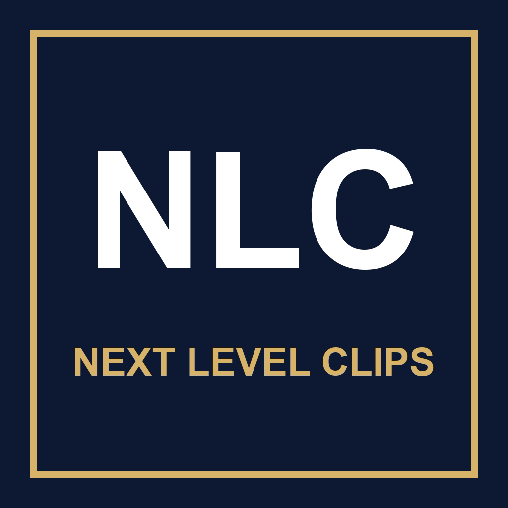

NextLevelClips Publisher
An internal tool of the NextLevelClips channel. It publishes our own short GTA 6 gaming clips to our own accounts at scheduled times for viewers in Europe and the United States.
What it does
- Takes finished vertical clips (about one minute) made by our team.
- Writes a caption with the clip's hook line, a short description, our footer and a few hashtags.
- Publishes the clip to our own TikTok account through the official Content Posting API, after we sign in with TikTok (Login Kit).
- Reads the view and like counts of our own published videos to see which clips work best.
Who can use it
Only the NextLevelClips team, on our own computer. It is not offered to other users.